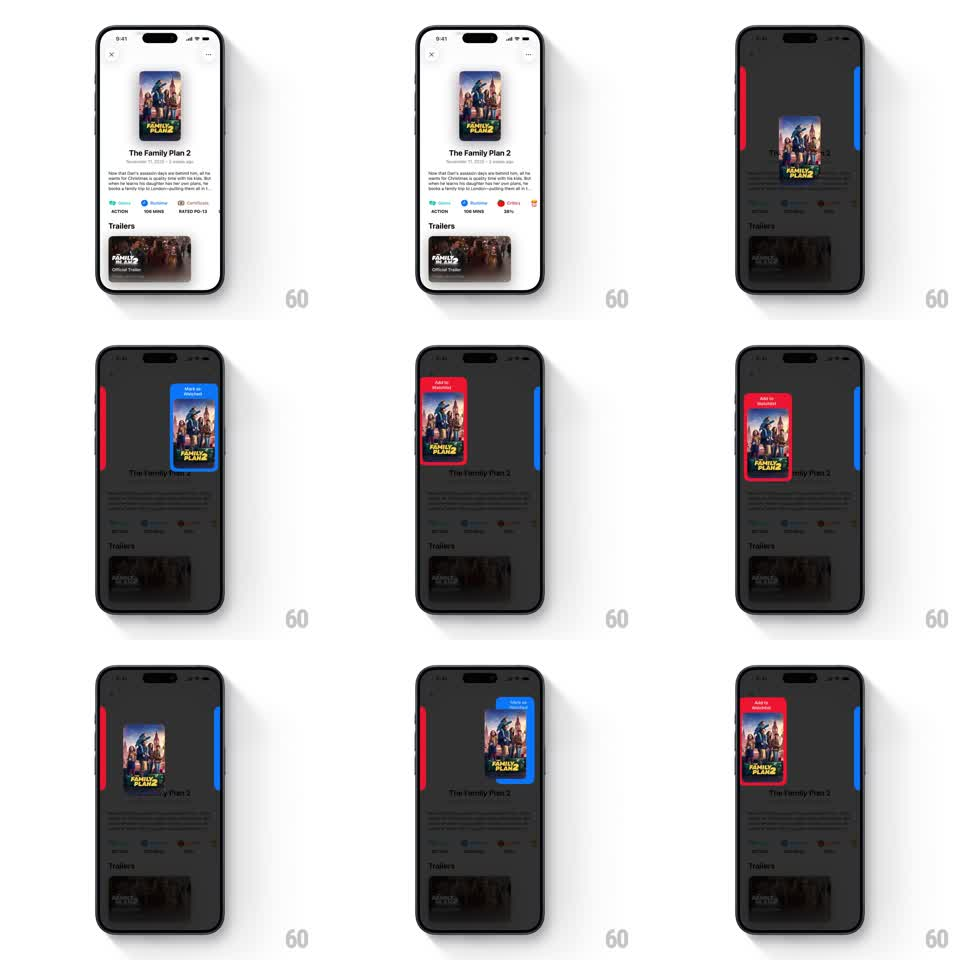

Media
Frame-by-frame

Rebuild this interaction 1:1: Binge Buddy's movie detail sheet - swiping the poster card left or right snaps it into a colored edge bucket: red "Add to Watched" on the left, blue "Add to Waitlist" on the right, with springy card physics over a dimmed backdrop.

Rebuild this interaction 1:1: Binge Buddy's movie detail sheet - swiping the poster card left or right snaps it into a colored edge bucket: red "Add to Watched" on the left, blue "Add to Waitlist" on the right, with springy card physics over a dimmed backdrop. ## Integration Integration: stack-agnostic spec - springs given as stiffness/damping, timed motions as duration + curve; map every value to your framework and animation library of choice. ## Scene A movie detail sheet (poster, title, synopsis, genre chips, runtime, trailers section). On drag, the backdrop dims to ~60% black and two vertical bucket tabs slide in from the screen edges: a red tab on the left labeled "Add to Watched" and a blue tab on the right labeled "Add to Waitlist". The poster detaches as a floating card that follows the finger. ## Motion spec Pattern: drag-to-bucket with edge targets and spring snap. - Drag start: poster lifts (scale 1 -> 1.04, shadow deepens, 120ms) and the backdrop dims + bucket tabs slide in from the edges (200ms, ease-out). - Drag: card translates 1:1 with the finger with a slight tilt toward drag direction (max 8deg); the bucket under the current half lights up and its tab widens (~20%) as the card crosses the screen's center line. - Snap in: release over a bucket - the card flies into the tab (spring ~320/22), scales down to badge size, and the tab pulses once (scale 1 -> 1.15 -> 1, 250ms) to confirm. - Cancel: release in the middle - the card springs back to its sheet slot (spring ~280/20) and the backdrop undims (200ms). ## Calibration - Buckets appear only while dragging; the resting sheet has no visible tabs. - The card tilts with velocity, not position - a static tilt feels glued on. ## Reduced motion Card follows the finger without tilt; bucket confirmation is a color change only, no pulse; backdrop dims instantly. ## Don't miss - Left is red Watched, right is blue Waitlist - don't swap the color/side mapping. - The sheet content stays put under the dim; only the poster card travels.